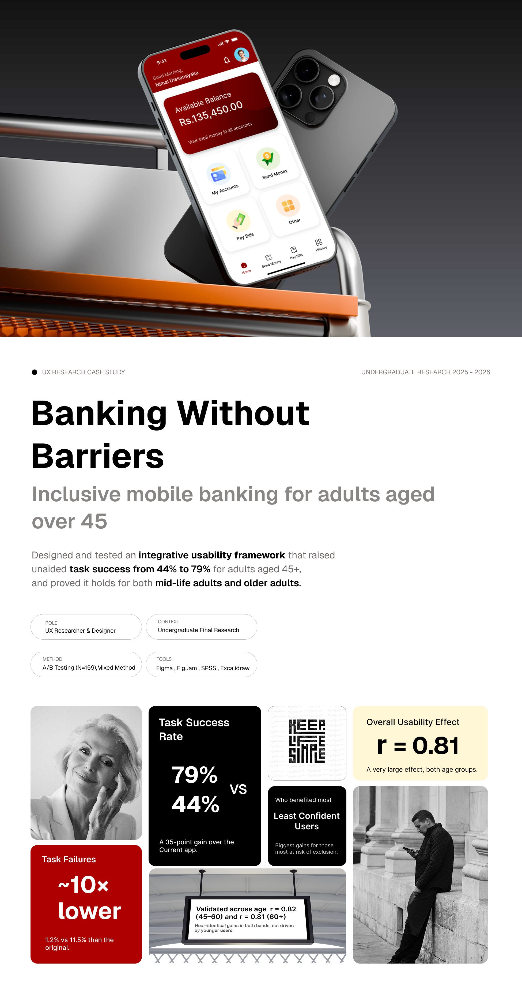
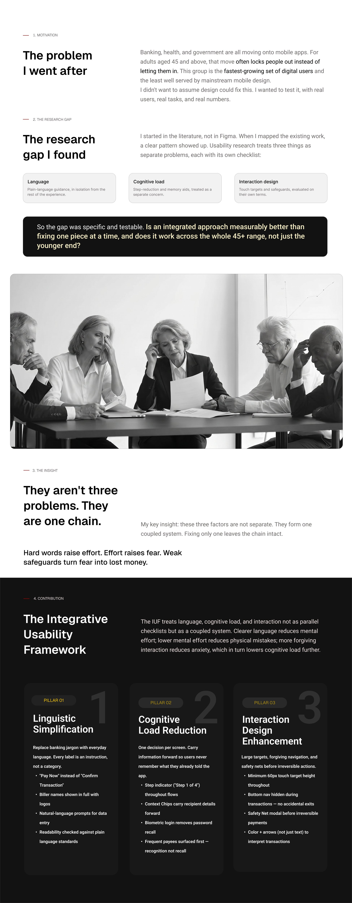
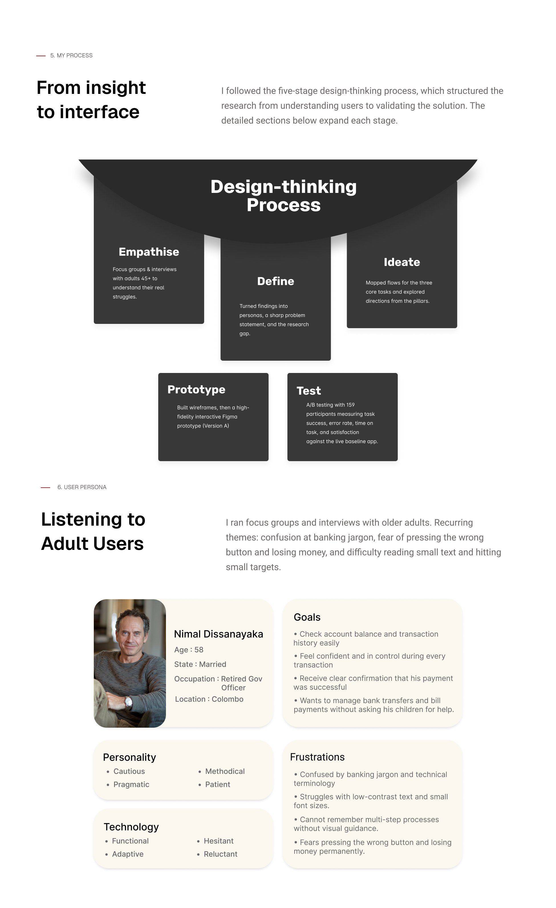
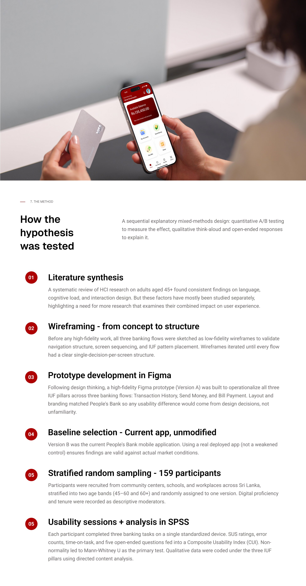
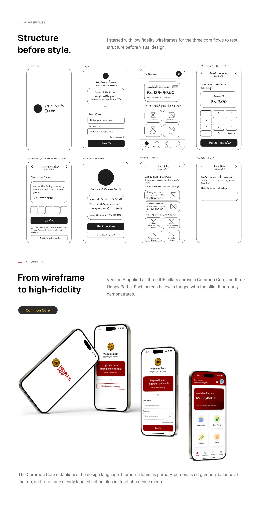
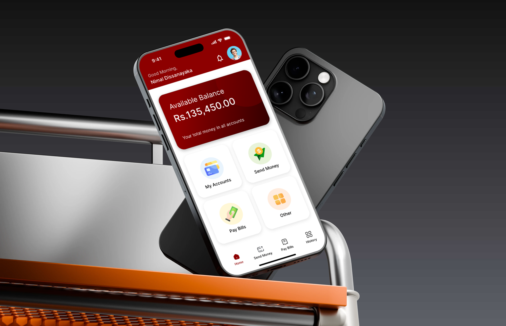
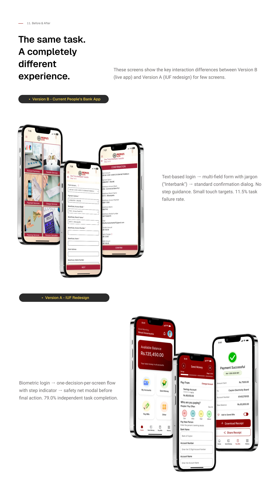
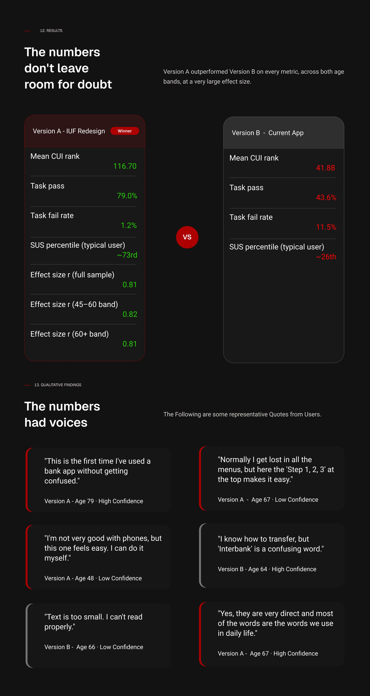
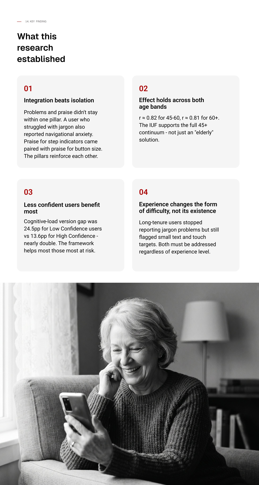
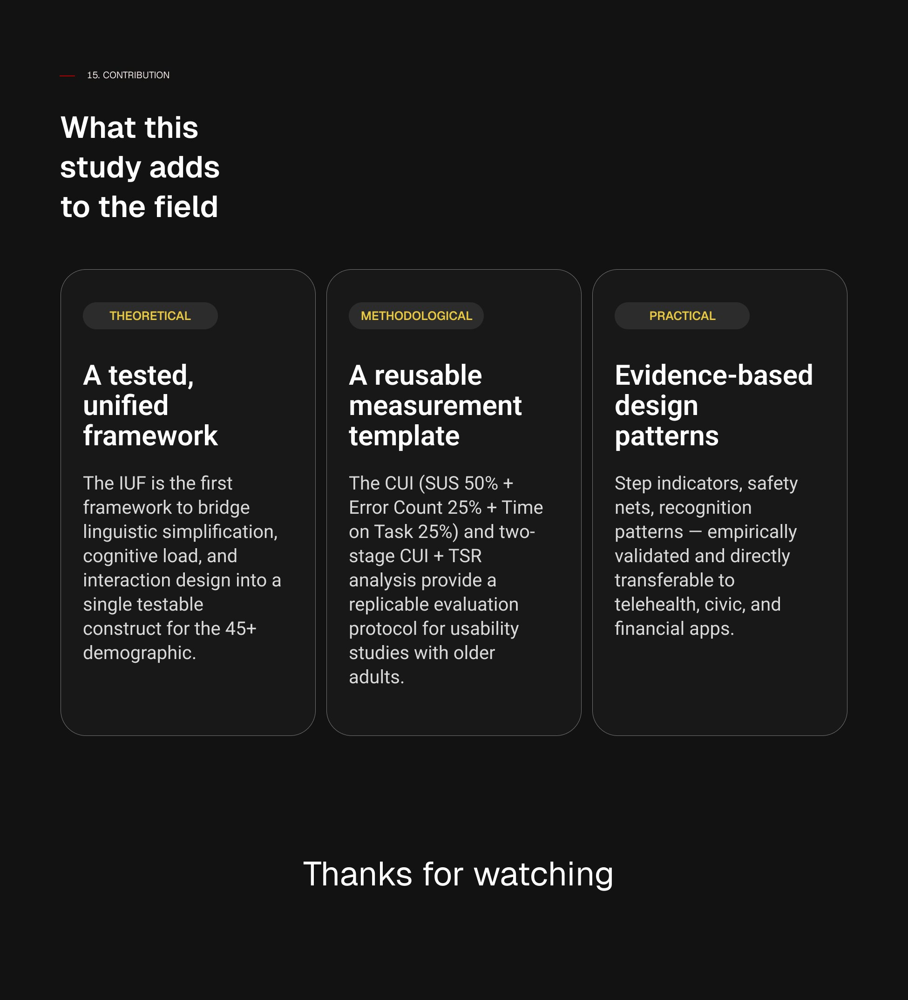

UX Research Case Study · Undergraduate Research 2025 – 2026
Designed and validated an Integrative Usability Framework (IUF) for inclusive mobile banking — raising unaided task success from 44% to 79% for adults aged 45+, confirmed across both mid-life and older adult groups.









